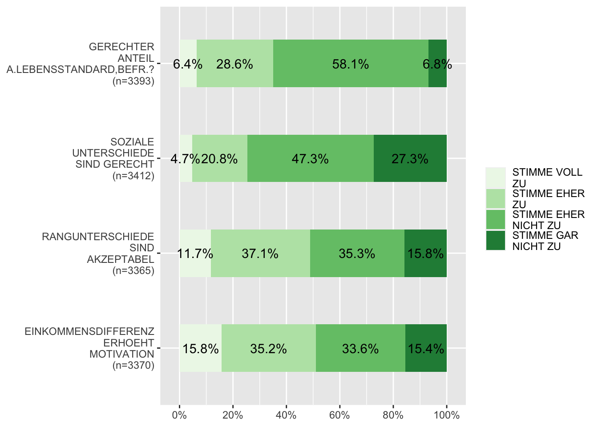

5 Multivariate Datenanalyse
5.1 Korrelationsmatrix
Wtd.cor()
# Datensatz erstellen
ds <- allbus2018 %>%
select(im19:im21, id01, wghtpew)
#Berechnung der Korrelationsmatrix
corMatrix <- wtd.cor(ds[1:4], weight = ds$wghtpew)
corMatrix
#> $correlation
#> im19 im20 im21 id01
#> im19 1.00000000 0.51469202 0.3452849 0.03606102
#> im20 0.51469202 1.00000000 0.5031235 -0.02409378
#> im21 0.34528492 0.50312350 1.0000000 -0.16428931
#> id01 0.03606102 -0.02409378 -0.1642893 1.00000000
#>
#> $std.err
#> im19 im20 im21 id01
#> im19 7.895494e-17 1.492272e-02 1.624389e-02 1.737802e-02
#> im20 1.492272e-02 1.144824e-15 1.495593e-02 1.739744e-02
#> im21 1.624389e-02 1.495593e-02 9.207409e-16 1.702737e-02
#> id01 1.737802e-02 1.739744e-02 1.702737e-02 4.070850e-17
#>
#> $t.value
#> im19 im20 im21 id01
#> im19 1.266545e+16 3.449049e+01 2.125629e+01 2.075094e+00
#> im20 3.449049e+01 8.734970e+14 3.364041e+01 -1.384903e+00
#> im21 2.125629e+01 3.364041e+01 1.086082e+15 -9.648546e+00
#> id01 2.075094e+00 -1.384903e+00 -9.648546e+00 2.456490e+16
#>
#> $p.value
#> im19 im20 im21 id01
#> im19 0.000000e+00 6.726140e-223 3.831939e-94 3.805500e-02
#> im20 6.726140e-223 0.000000e+00 6.568035e-214 1.661756e-01
#> im21 3.831939e-94 6.568035e-214 0.000000e+00 9.526801e-22
#> id01 3.805500e-02 1.661756e-01 9.526801e-22 0.000000e+00
# Grafik
# Achtung! Die Funktionen corrplot() und corrplot.mixed laufen noch nicht 100% stabil
corrplot(corMatrix$correlation, p.mat = corMatrix$p.value, method = "circle",
tl.col = "black", addCoef.col = "black", cl.cex = .7, number.cex = .7,
insig = "pch")
5.2 Realiabilitätsanalyse
5.3 Mittelwertvergleich (unabhängig)
Tablle mit Funktionen
Weighted_ttest()
Syntax:
# Ohne Pipe
# Mit Pipe
Beispielcode: